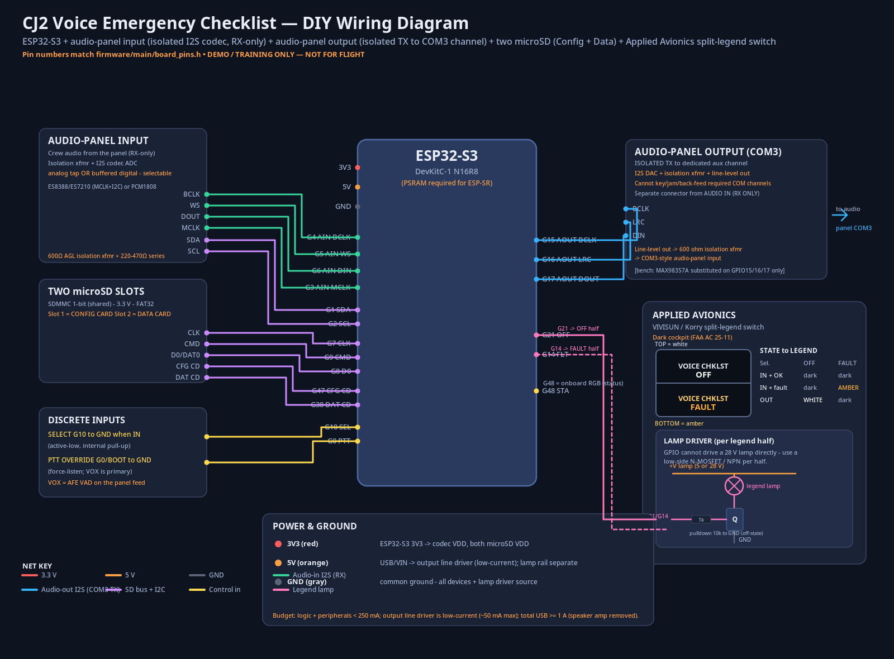
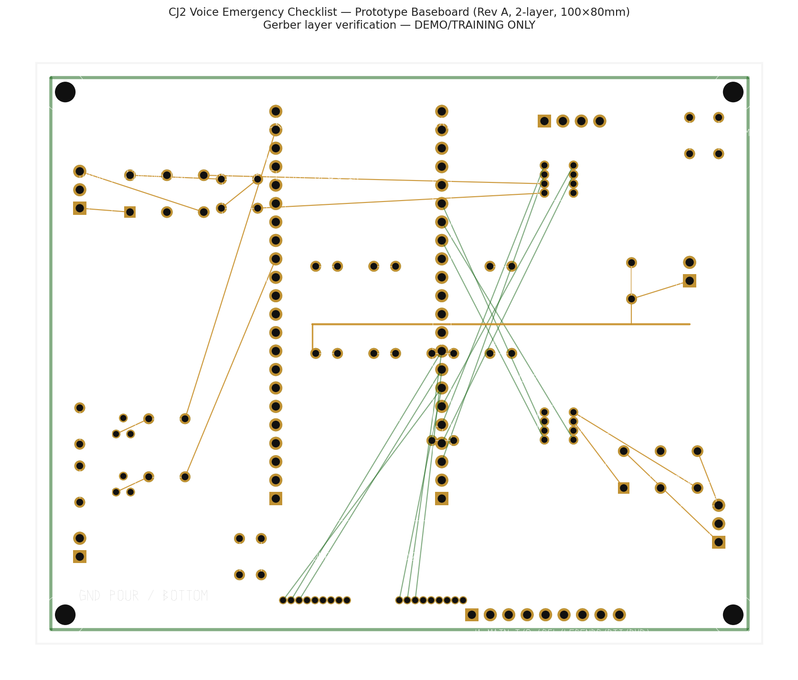

Select the procedure
A single SELECT input or your voice calls up the emergency checklist for the situation — engine fire, electrical, depressurization — as defined on the aircraft's config card.
Cessna CJ2 · Voice-driven · Hands-free
CheckM8 is a panel-mounted avionics module that speaks and listens. It reads the right checklist aloud, follows your voice through every step, and drives a split-legend annunciator — all defined per aircraft by a swappable config card.
Demo / training research project — not for actual flight operations.
How it works
A single SELECT input or your voice calls up the emergency checklist for the situation — engine fire, electrical, depressurization — as defined on the aircraft's config card.
CheckM8 announces each step over a dedicated isolated audio channel and listens on an isolated receive tap, advancing as you confirm each action by voice.
A split-legend annunciator shows OFF (white, top) and FAULT (amber, bottom). Active output inhibits the fault legend per AC 25-11B, and both halves are defined-OFF at boot.
A second microSD records the run. The config card defines the checklists; the data card keeps the record — swap either without re-flashing firmware.
Architecture
CheckM8 touches the audio panel through two separate, galvanically isolated channels — so it can hear and speak without ever keying or back-driving the panel.


Hardware
The integration baseboard hosts an ESP32-S3 DevKitC and codec/DAC breakouts on header sockets, with the isolation transformers, line driver, lamp-driver MOSFETs, connectors and power on the board itself.
Full BOM, RS-274X Gerbers and Excellon drill are in the public repository.
Project status & certification
CheckM8 is an engineering and research project. It is not for actual flight operations, is not a certified device, and nothing here is operational or safety-of-flight guidance.
The intended depth targets DO-160 environmental qualification (potentially NORSEE), while avoiding DO-178. The isolated COM3 output is more invasive than a pure receive tap and would likely require an STC or field approval — not a logbook minor alteration.
Three items remain open: output isolation and failure modes, non-interference with required COM radios, and audio masking / intelligibility. These must be substantiated before any installation is considered.
A provisional patent draft and trademark research exist in the repository. The audio-output path was added after the original prior-art search and needs an attorney refresh before any nonprovisional filing. This material is not legal advice.
Master spec, firmware, wiring diagram, prototype BOM and fab-ready Gerbers — all in one public repository.
Open the repository ↗